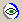

The Spyke utility is installed with ASAP Remote.
Setting Preferences
To set preferences for Remote client access to your machine, or to determine which client has accessed it, you need the Spyke utility (Start > Programs > ASAP > Spyke).
Once you have opened Spyke, the icon  is displayed in your Task Tray. To re-open the Spyke dialog box during the session, double-click this icon.
| End | Ends client session |
| Pause/Resume | Pauses or resumes client session |
| Message | Opens Message dialog |
| OK | Minimizes dialog |
| Quit | Closes Spyke dialog |
| Options | Click to open the dialog box for User Preferences/Remote Tab |